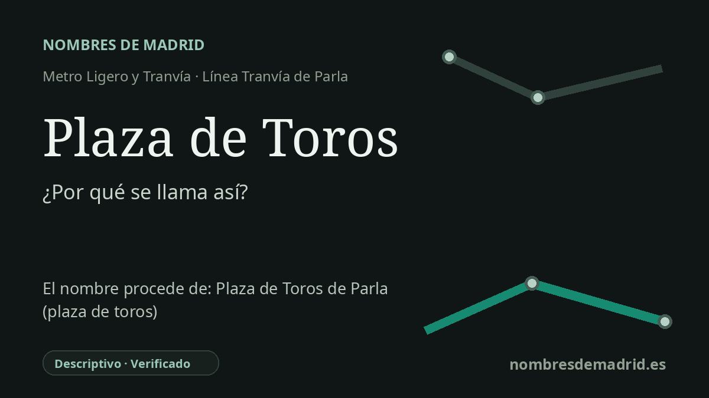

Publicado el · Investigación de Nombres de Madrid · Cómo verificamos cada origen · 7 fuentes consultadas
Respuesta rápida
Plaza de Toros es un nombre descriptivo por la plaza de toros de Parla, un hito junto al tramo sur del recorrido circular del tranvía. La actual plaza municipal se construyó en 2003, antes de la apertura del Tranvía de Parla en 2007.
La historia del nombre
Plaza de Toros es un nombre descriptivo directo. En el plano del Tranvía de Parla identifica la parada situada junto al coso taurino de la ciudad, cerca de la avenida Juan Carlos I y de calles como Julio Romero de Torres y Pablo Picasso. No alude a una persona, a un santo ni a un antiguo núcleo urbano: señala una instalación local visible.
La expresión española plaza de toros designa el recinto destinado a los festejos taurinos. La palabra plaza conserva además la memoria de la costumbre anterior de celebrar corridas en las plazas públicas antes de que se generalizaran los cosos construidos para ese uso. En Parla, el nombre une por tanto un término genérico castellano con un hito concreto del municipio.
La plaza actual de Parla no es simplemente una plaza portátil de temporada. La documentación municipal y técnica identifica una Plaza de Toros Municipal construida en 2003. Un informe técnico de 2018 también señala defectos estructurales graves y menciona una plaza portátil alternativa utilizada para las fiestas de 2017, lo que ayuda a explicar por qué aparecen referencias posteriores a instalaciones desmontables.
El contexto tranviario está bien documentado. El Tranvía de Parla comenzó a prestar servicio al público en 2007 como una línea circular de metro ligero dentro del municipio, y Plaza de Toros figura como una de sus paradas en la información actual del operador y del Consorcio Regional de Transportes. Como topónimo de transporte, cumple una función práctica: marcar un punto reconocible del sector sur del anillo tranviario.
El origen mejor respaldado es, por tanto, la propia plaza de toros, no una afirmación general sobre todos los cosos españoles ni una instalación estacional no documentada como origen único. No consta el acto administrativo preciso que asignó el nombre a la parada, de modo que la datación más prudente es que el nombre estaba en uso desde la apertura del tranvía en 2007. La etimología de base queda verificada, aunque varios detalles llamativos de la descripción anterior conviene retirarlos o matizarlos.